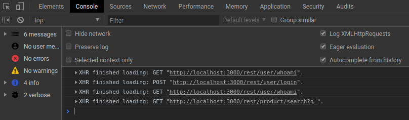
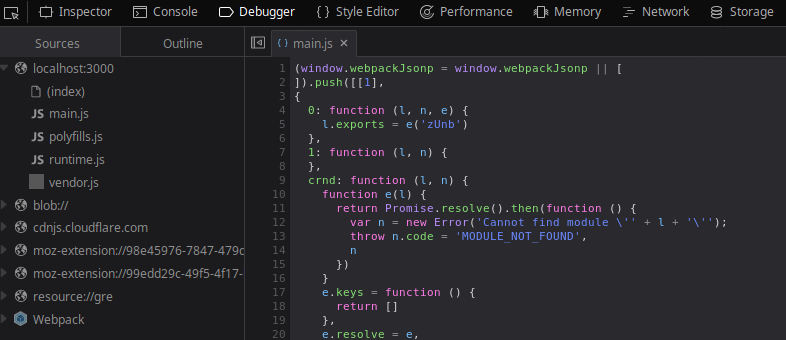
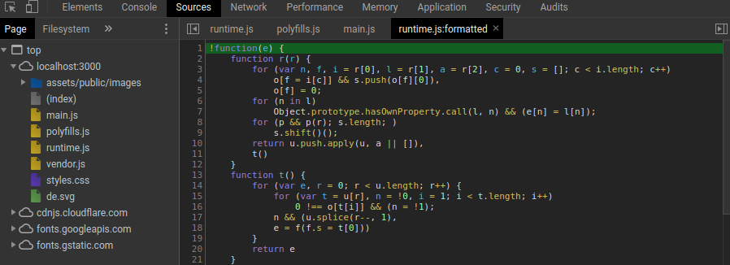

# Security Training for Web Developers https://github.com/nt-ca-aqe/thesis-ahs
# Introduction TODO
# Overview ## Basics 1. IT Security 2. Open Web Application Security Project (OWASP) 3. OWASP Juice Shop 4. Security Tools 5. Spring Boot # Overview ## Security risks 1. Broken Access Control 2. Broken Authentication 3. Injection 4. Sensitive Data Exposure 5. Cross-site Scripting (XSS)
# IT Security TODO
# OWASP TODO
# OWASP Juice Shop ## What is OWASP Juice Shop? <ul> <li class="fragment fade-in">Intentionally insecure web application</li> <li class="fragment fade-in">Developed for security training</li> <li class="fragment fade-in">Includes all Web Application Security Risks from OWASP Top 10</li> </ul> ## Architecture <ul> <li class="fragment fade-in">JavaScript Application</li> <li class="fragment fade-in">Written in Node.js, Express and Angular</li> <li class="fragment fade-in">SQLite as database</li> </ul> ## Main page of OWASP Juice Shop ## Score board ## Challenges <ul> <li class="fragment fade-in">OWASP Juice Shop contains several <b>hacking challenges</b></li> <li class="fragment fade-in">Challenges belong to different <b>vulnerability categories</b></li> <li class="fragment fade-in">Challenges have different <b>difficulties</b></li> <li class="fragment fade-in">Solved challenges are tracked on the <b>score board</b></li> </ul>
# Security Tools ## Web Development Tools <img data-src="images/chrome.png" style="width:25%"> ### Inspector / Elements <p>Shows <b>HTML</b> source code. Might reveal hidden or commmented out elements</p> <br/> <img data-src="images/chrome.png" style="width:8%"> ### Console <p>Shows <b>HTTP requests</b> like <b>GET</b> and <b>POST</b><br/> Reveals construction of <b>session token</b> and <b>JSON</b> data</p> <br/> <img data-src="images/chrome.png" style="width:8%">  ### Debugger / Sources Shows <b>business logic</b> that could include hidden indexes, functions or algorithms<br/> <br/> <img data-src="images/chrome.png" style="width:8%">  ### Storage / Application Allows <b>manipulation</b> of active session<br/> <img data-src="images/firefox_storage.png" style="width:50%"><br/> <img data-src="images/chrome.png" style="width:8%"> ## [OWASP Zed Attack Proxy](https://github.com/zaproxy/zaproxy/wiki/Downloads) <ul> <li class="fragment fade-in">Open Source Web Application Security Scanner</li> <li class="fragment fade-in">Written in JavaScript</li> <li class="fragment fade-in">Available for Windows, Linux and Mac OS X</li> </ul> ### Features <ul> <li class="fragment fade-in">Automated scanner to detect security vulnerabilities</li> <li class="fragment fade-in">Fuzzer</li> <li class="fragment fade-in">Forced Browsing</li> <li class="fragment fade-in">Web Indexing</li> </ul> ### Automated scan of OWASP Juice Shop ## [Postman](https://www.getpostman.com/apps) <img data-src="images/postman-logo.png" style="width:25%"> <p class="fragment fade-in">Tool for API development</p> ### Features <ul> <li class="fragment fade-in">Sending HTTP requests with custom variables</li> <li class="fragment fade-in">Saving responses</li> <li class="fragment fade-in">Automate testing with Collections</li> <li class="fragment fade-in">API Monitoring</li> </ul> ### Sending a GET request to OWASP Juice Shop <img data-src="images/postman.png" style="width:65%"> ### Sending a POST request to OWASP Juice Shop
# Spring Boot <img data-src="images/spring.png"> TODO <ul> <li class="fragment fade-in">Application framework for java platform</li> </ul> TODO
# Broken Access Control ## Issue <ul> <li class="fragment fade-up">Security flaws caused by fragile implemented access rights</li> <li class="fragment fade-up">The decision whether an user is allowed to call a certain resource depends on factors like the confidentiality of the requested source and the role of the requesting user</li> </ul> ## Impact <ul> <li class="fragment fade-up">Unauthorized users are able to take over the administration</li> <li class="fragment fade-up">Unauthorized users can obtain, manipulate or delete important and sensitive data</li> </ul> ## Access Control Models <ul> <li class="fragment fade-in">Discretionary Access Control (DAC)</li> <li class="fragment fade-in">Role Based Access Control (RBAC)</li> <li class="fragment fade-in">Mandatory Access Control (MAC)</li> <li class="fragment fade-in">Attribute-based Access Control (ABAC)</li> </ul> ## Discretionary Access Control (DAC) <p class="fragment fade-in">Authorization based on <b>user</b></p> <p class="fragment fade-in">Access control is defined for <b>every single user</b></p> ## Role Based Access Control (RBAC) <p class="fragment fade-in">Authorization based on <b>group permissions</b></p> <p class="fragment fade-in">User is part of a <b>group</b></p> ## Role Based Access Control (RBAC) ### Group examples <ul> <li class="fragment fade-in">Standard user</li> <li class="fragment fade-in">Network administrator</li> <li class="fragment fade-in">System administrator</li> <li class="fragment fade-in">Webmaster</li> </ul> ## Mandatory Access Control (MAC) <p class="fragment fade-in">Authorization based on <b>permissions</b> and <b>resource sensivity</b></p> <p class="fragment fade-in">System administrator defines the <b>secrecy level</b> of resources</p> ## Attribute-based Access Control (ABAC) TODO <h2 style="color:#ff0000">Challenge time</h2> Browse to the [Github Repository](https://github.com/nt-ca-aqe/thesis-ahs/tree/master/Challenge%201:%20Broken%20Access%20Control) and solve the challenges in the <b>Broken Access Control</b> section. ## Prevention TODO ## Implementation in Spring Boot <p class="fragment fade-in">By clicking on <b>Administration Section</b>, the user is forwarded to <b>Login</b></p> ## Implementation in Spring Boot <p class="fragment fade-in">A login with user <b>standarduser</b> of role <b>USER</b> won't show administration section ## Implementation in Spring Boot <p class="fragment fade-in">This leads to a <b>permission denied</b> site with error code <b>403</b> ## Implementation in Spring Boot <pre><code> @Configuration @EnableWebSecurity public class WebSecurityConfig extends WebSecurityConfigurerAdapter { @Autowired private AuthenticationEntryPoint authEntryPoint; @Override protected void configure(HttpSecurity http) throws Exception { http.httpBasic().authenticationEntryPoint(authEntryPoint); http.authorizeRequests().antMatchers("/", "/login", "/logout", "/css/**").permitAll(); http.authorizeRequests().antMatchers("/userInfo").access("hasAnyRole('ROLE_USER', 'ROLE_ADMIN')"); http.authorizeRequests().antMatchers("/admin").access("hasRole('ROLE_ADMIN')"); http.authorizeRequests().and().exceptionHandling().accessDeniedPage("/403"); http.authorizeRequests().and().formLogin()// .loginProcessingUrl("/j_spring_security_check") .loginPage("/login")// .defaultSuccessUrl("/userInfo")// .failureUrl("/login?error=true")// .usernameParameter("username")// .passwordParameter("password") .and().logout().logoutUrl("/logout").logoutSuccessUrl("/logoutSuccessful"); } } </code></pre> ## Implementation in Spring Boot <p class="fragment fade-in">Permissions are defined in class <b>WebSecurityConfig</b></p> <p class="fragment fade-in">This class defines, which role a user needs to access a certain site</p> <p class="fragment fade-in">Examples for <b>Roles</b> are:</p> <ul> <li class="fragment fade-in">ROLE_USER</li> <li class="fragment fade-in">ROLE_ADMIN</li> </ul>
# Broken Authentication ## Issue <p class="fragment fade-in">Insufficient conception of identity and access control</p> <p class="fragment fade-in">The consequences are insecure <b>session management</b> and <b>authentication</b></p> ## Impact <p class="fragment fade-in">Attackers are able to:</p> <ul> <li class="fragment fade-in">obtain sensitive data (passwords, credit card information)</li> <li class="fragment fade-in">overtake sessions of another users</li> <li class="fragment fade-in">perform identity theft</li> <li class="fragment fade-in">gain access to administrator accounts</li> </ul> ## Brute-force attack <p class="fragment fade-in">The Brute-force attack is an <b>automated process</b> with the intention of determining <b>passwords</b></p> ## Brute-force attack <p class="fragment fade-in">By testing <b>random strings</b> or <b>number combinations</b>, the attacker tries to gain access to an account or a server</p> ## Brute-force attack <p class="fragment fade-in">Attackers use <b>public lists</b> with often used, as unsecure considered passwords. Examples are:</p> <ul> <li class="fragment fade-in">password</li> <li class="fragment fade-in">admin</li> <li class="fragment fade-in">abc123</li> </ul> ## Brute-force attack <p class="fragment fade-in">Brute-force attacks can be executed with <b>security tools</b> like OWASP ZAP</p> ## Brute-force attack <p class="fragment fade-in">As you can see in the illustration, OWASP ZAP is testing different password combinations</p> # Session Hijacking <h2 style="color:#ff0000">Challenge time</h2> Browse to the [Github Repository](https://github.com/nt-ca-aqe/thesis-ahs/tree/master/Challenge%202:%20Broken%20Authentication) and solve the challenges in the <b>Broken Authentication</b> section. ## Prevention TODO ## Implementation in Spring Boot <p>User tries a registration with password "<b>abc</b>"</p> ## Implementation in Spring Boot <p>Password validation prints <b>every</b> failure reason</p> ## Implementation in Spring Boot <pre><code> private boolean isPasswordValid(final String password, Errors errors) { final PasswordValidator validator = new PasswordValidator(Arrays.asList( new LengthRule(8, 30), new UppercaseCharacterRule(1), new DigitCharacterRule(1), new SpecialCharacterRule(1))); final RuleResult result = validator.validate(new PasswordData(password)); for (int i = 0; i < result.getDetails().size(); i++) { errors.rejectValue("password", result.getDetails().get(i).getErrorCode()); } if (result.isValid()) { return true; } return false; } </code></pre> ## Implementation in Spring Boot <p class="fragment fade-in"><b>Passwort validator</b> checks if the given password has:</p> <ul> <li class="fragment fade-in">between <b>8</b> and <b>30</b> characters</li> <li class="fragment fade-in">at least one <b>uppercase</b> character</li> <li class="fragment fade-in">at least one <b>digit</b> character</li> <li class="fragment fade-in">at least one <b>special</b> character</li> </ul>
# Injection ## Issue <p class="fragment fade-in">Untrusted data with malicious is sent to an interpreter as part of a command or query.</p> <p class="fragment fade-in">The interpreter executes the manipulated query</b></p> ## Impact <p class="fragment fade-in">Disclosure to unauthorized parties</p> <p class="fragment fade-in">Data loss or manipulation</b></p> <p class="fragment fade-in">Denial of access</p> ## SQL Injection <!-- ## NoSQL Injection --> <!----> <!----> <!-- ## LDAP Injection--> <!----> <!----> <!-- ## OS Injection--> <!----> <!----> <h2 style="color:#ff0000">Challenge time</h2> Browse to the [Github Repository](https://github.com/nt-ca-aqe/thesis-ahs/tree/master/Challenge%203:%20Injection) and solve the challenges in the <b>Injection</b> section. ## Prevention of SQL Injection <p class="fragment fade-in">Prepared Statements</p> <p class="fragment fade-in">Stored Procedures</b></p> <p class="fragment fade-in">White List Input Validation</p> <p class="fragment fade-in">Escaping All User-Supplied Input</p> ## Prepared Statements <pre><code> <?php $pdo = new PDO('mysql:host=localhost;dbname=test', 'username', 'password'); if(isset($_GET['id'])) { $id = $_GET['id']; } else { die("Bitte eine ?id übergeben"); } $statement = $pdo->prepare("SELECT * FROM users WHERE id = ?"); $statement->execute(array($id)); while($row = $statement->fetch()) { echo $row['firstname']." ".$row['lastname']."<br />"; echo "E-Mail: ".$row['email']."<br /><br />"; } ?> </code></pre> ## Stored Procedures <pre><code> CREATE PROCEDURE SelectAllUsers AS SELECT * FROM Users GO; EXEC SelectAllUsers; </code></pre> ## White List Input Validation <pre><code> String tableParam; switch(PARAM): case "Value1": tableParam = "Drinks"; break; case "Value2": tableParam = "Meals"; break; default : throw new InputValidationException("unexpected value provided for table param"); </code></pre> ## Escaping All User-Supplied Input TODO
# Sensitive Data Exposure <img data-src="images/sde1.png" style="width:45%"> ## Issue TODO ## Impact TODO <h2 style="color:#ff0000">Challenge time</h2> Browse to the [Github Repository](https://github.com/nt-ca-aqe/thesis-ahs/tree/master/Challenge%204:%20Sensitive%20Data%20Exposure) and solve the challenges in the <b>Sensitive Data Exposure</b> section. ## Prevention TODO ## Implementation in Spring Boot TODO
# Cross-site scripting (XSS) ## Issue TODO ## Impact TODO ## Persisted XSS TODO ## Reflected XSS TODO ## DOM-based XSS TODO <h2 style="color:#ff0000">Challenge time</h2> Browse to the [Github Repository](https://github.com/nt-ca-aqe/thesis-ahs/tree/master/Challenge%205:%20Cross-Site%20Scripting%20(XSS%29) and solve the challenges in the <b>Cross-site scripting (XSS)</b> section. ## Prevention TODO ## Implementation in Spring Boot TODO
# Conclusion TODO
## Thank you for your attention!